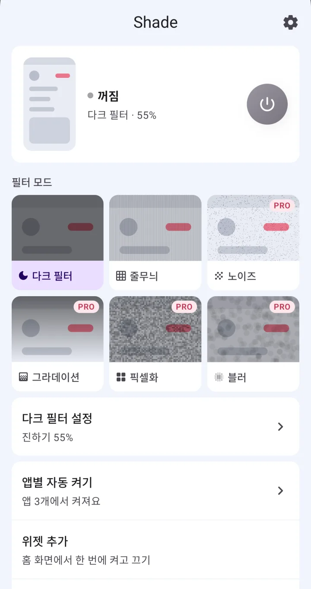
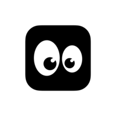
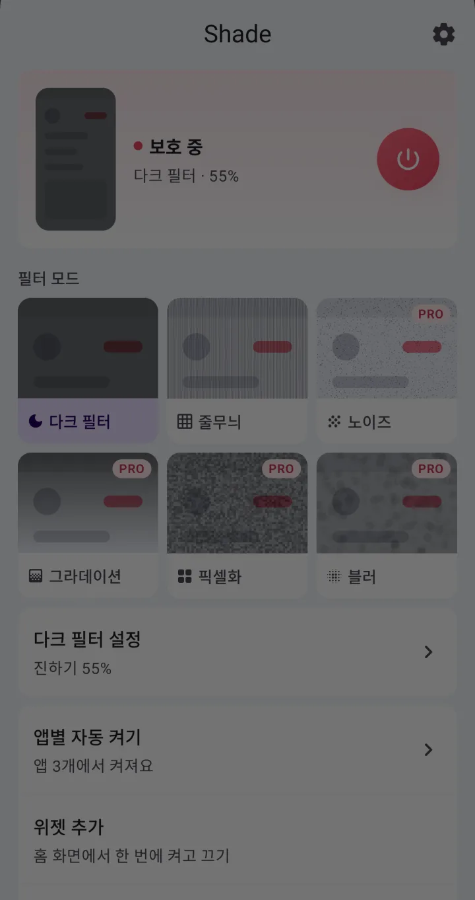
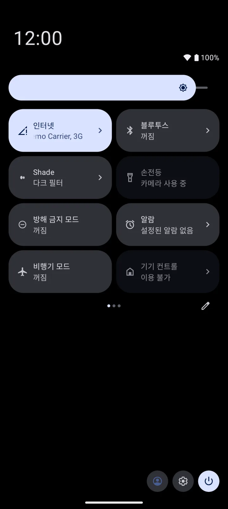
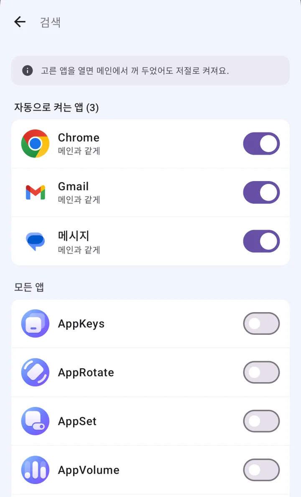
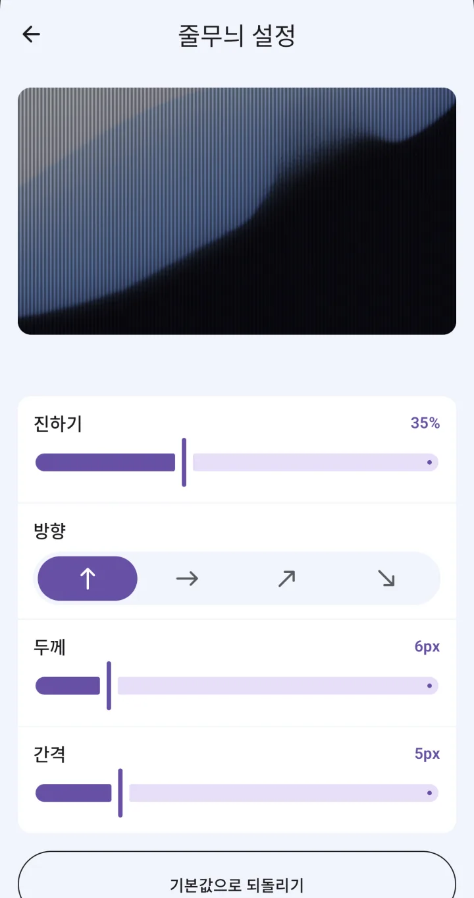

보호 필터 6가지
다크 필터, 줄무늬, 노이즈, 그라데이션, 픽셀화, 블러 중에서 고르면 돼요. 줄무늬는 세로·가로·대각선 두 방향, 그라데이션은 네 방향으로 바꿀 수 있어요.


Shade ENShade는 지하철이나 카페에서 옆 사람이 내 휴대폰 화면을 엿보지 못하게, 화면 위에 어둡게·줄무늬 같은 보호 필터를 덮어 주는 안드로이드 앱이에요. 다크 필터와 줄무늬 필터는 무료(광고 포함)이고, 나머지 필터 4종과 광고 제거는 한 번 결제하는 평생 이용권으로 열려요.
Google Play에서 받기
버튼 한 번이면 화면 위로 필터가 내려와요. 다시 누르면 걷혀요.
자동 켜기에 넣은 앱마다 쓸 필터를 따로 정해요. 메신저는 줄무늬, 은행 앱은 블러처럼요.
프로 필터 4종은 구매 전에도 골라서 화면에 어떻게 덮이는지 볼 수 있어요. 미리보기는 보호를 끈 상태에서 되고, 실제로 켜려면 프리미엄이 필요해요.
다크 필터, 줄무늬, 노이즈, 그라데이션, 픽셀화, 블러 중에서 고르면 돼요. 줄무늬는 세로·가로·대각선 두 방향, 그라데이션은 네 방향으로 바꿀 수 있어요.

앱의 전원 버튼, 알림창의 빠른 설정 타일, 홈 화면 위젯, 알림에서 바로 켜고 꺼요. 타일과 위젯은 Shade 첫 화면에서 추가할 수 있어요.

은행 앱이나 메신저처럼 고른 앱을 열면 필터가 저절로 켜져요. 자동으로 켜진 필터는 그 앱을 벗어나면 다시 꺼져요.

진하기(0~95%)와 줄 굵기·간격·방향, 노이즈 밀도, 픽셀 크기, 블러 강도를 필터마다 맞추고, 언제든 기본값으로 되돌려요. 80%를 넘기면 내 눈에도 어두울 수 있다고 미리 알려 줘요.

| 무료 | 프리미엄 | |
|---|---|---|
| 가격 | 무료 | 평생 이용권 · 한 번 결제, 구독 아님 |
| 필터 | 다크 필터, 줄무늬 | 6가지 모두 (노이즈·그라데이션·픽셀화·블러 추가) |
| 진하기·무늬 세부 조절 | ✓ | ✓ |
| 앱별 자동 켜기 | ✓ 앱 개수 제한 없음 | ✓ |
| 앱마다 다른 필터 | — (모든 앱이 메인과 같은 필터) | ✓ |
| 버튼·타일·위젯·알림으로 켜고 끄기 | ✓ | ✓ |
| 광고 | 배너, 앱을 열 때 뜨는 광고 | 없어요 |
| 새 폰으로 옮길 때 | — | 같은 Google 계정으로 구매 복원 |
무료로 쓰는 기능에는 사용 개수나 횟수 제한이 없어요.
| Shade | 사생활 보호 필름 | 화면을 어둡게 하는 앱 | 폰 기본 밝기 낮추기 | |
|---|---|---|---|---|
| 가리는 방식 | 화면 위에 필터를 덮어요(소프트웨어) | 보는 각도를 좁혀요 | 화면 전체를 어둡게 해요 | 화면 밝기만 낮춰요 |
| 정면에서 내 눈에는 | 필터가 진할수록 나도 어둡게 보여요 | 대개 정면은 잘 보여요 | 어두워져요 | 어두워져요 |
| 켜고 끄기 | 버튼·타일·위젯·알림에서 한 번에 | 붙이면 늘 켜져 있어요 | 앱마다 달라요 | 알림창 밝기 막대로 조절해요 |
| 특정 앱에서만 | 자동 켜기로 고른 앱에서 저절로 켜져요 | 안 돼요 | 앱마다 달라요 | 대개 안 돼요 |
| 필터 종류 | 6가지(무료 2가지) | — | 대개 어둡게 하기 하나 | — |
| 필요한 것 | 접근성 권한. 무료(광고) 또는 평생 이용권 | 필름을 사서 붙여요 | 앱마다 달라요 | 따로 필요 없어요 |
범주 칸은 일반적인 특징이고 제품마다 다를 수 있어요.
Shade가 그런 앱이에요. 화면 위에 어둡게·줄무늬 같은 보호 필터를 덮어서 옆에서 화면을 엿보기 어렵게 해요. 앱의 전원 버튼이나 빠른 설정 타일, 홈 화면 위젯, 알림에서 한 번 눌러 켜고 꺼요.
네, 다크 필터와 줄무늬 필터, 앱별 자동 켜기, 타일·위젯·알림으로 켜고 끄기는 무료예요. 앱 개수나 사용 횟수 제한도 없어요. 무료판에는 배너 광고와 앱을 열 때 뜨는 광고가 나와요.
구독이 아니라 한 번 결제하는 평생 이용권이에요. 노이즈·그라데이션·픽셀화·블러 필터 4종과 앱마다 다른 필터가 열리고, 광고가 사라져요.
필터를 다른 앱 위에 띄우는 데 접근성 권한을 쓰기 때문에, 이 권한 없이는 쓸 수 없어요. 그 밖에는 자동 켜기에 넣은 앱이 열렸는지 알아차리는 데만 써요. '다른 앱 위에 표시' 권한은 따로 요청하지 않아요.
화면에 보이는 내용은 읽지 않아요. 어떤 앱이 열렸는지는 자동 켜기에 앱을 넣었을 때만 확인하고, 저장하거나 휴대폰 밖으로 보내지 않아요. 필터와 자동 켜기 같은 설정은 기기 안에 저장돼요. 다만 광고(AdMob)와 사용 통계·오류 보고(Firebase), 구매 확인(Google Play)은 인터넷을 써요.
네, 앱별 자동 켜기에 그 앱을 넣으면 열 때마다 필터가 저절로 켜져요. 자동으로 켜진 필터는 홈 화면이나 다른 앱으로 넘어가면 다시 꺼져요. 자동 켜기는 무료이고, 앱마다 다른 필터를 정하는 건 프리미엄이에요.
필터 설정에서 진하기를 낮춰 보세요. Shade는 화면 위에 필터를 덮는 방식이라 진할수록 내 눈에도 어두워지고, 80%를 넘기면 거의 안 보일 수 있어요. 줄무늬는 굵기와 간격을, 노이즈는 밀도를 바꿔 보는 것도 방법이에요.
아니요, Shade는 보는 각도를 바꾸는 필름이나 프라이버시 디스플레이가 아니라 화면 위에 그리는 소프트웨어 필터예요. 어느 거리와 각도에서 얼마나 가려지는지 잰 자료는 없어요. 쓰는 자리에서 필터 종류와 진하기를 직접 맞춰 보세요.
아니요, Shade는 안드로이드 10 이상에서만 돼요. iPhone 버전은 없어요.
새 폰에서 같은 Google 계정으로 구매를 복원하면 돼요. 계정 가입이나 로그인은 따로 없어요. 프로모션 코드로 켠 프리미엄은 그 기기에서만 쓸 수 있어서, 기기를 바꾸거나 초기화하면 꺼져요.
네, 보호를 끈 상태에서 프로 필터를 골라 미리 볼 수 있어요. 구매 전에는 미리보기만 되고, 실제로 켜서 쓰려면 프리미엄이 필요해요.
프리미엄 화면의 프로모션 코드 칸에 넣으면 돼요. 코드에 정해진 일수 동안 프리미엄이 켜지고, 그 기기에서만 쓸 수 있어요.